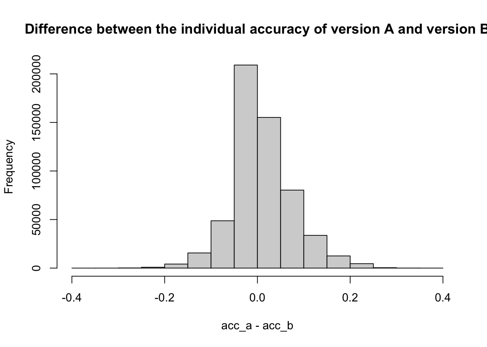

The following objects are masked from 'package:stats':
filter, lag
The following objects are masked from 'package:base':
intersect, setdiff, setequal, union
library(ggplot2)library(mirt)
Loading required package: stats4
Loading required package: lattice
library(stringr)# library(GA)
Data of Grammar Judgment Task
# Load the datadata <-read.csv("~/Documents/Project/project-llm-writing/data/grammar/grammar_full.csv")hist(data$elogit)
# unique(data$Eng_little)data_lr <- data %>%filter(Eng_little =="lot"| Eng_little =="little") %>%filter(Eng_country_yrs <=2) ##try to pair our population, arrives in English-speaking country for less than 2 years# hist(data_lr$Eng_country_yrs)# hist(data_lr$elogit)data_irt <- data_lr %>%select(grep("^q", names(data)))itm_dict <-colnames(data_irt)[c(1:6,77:ncol(data_irt))]itm_poly <-colnames(data_irt)[11:76]data_dict <- data_irt[, itm_dict]data_poly <- data_irt[, itm_poly]
The grammar judgment task is to test participants’ grammar ability. The task is to decide whether the presented sentence is grammatically correct or not. The dataset contains the responses of participants to the grammar judgment task. The dataset used in this analysis is a publically available dataset(https://osf.io/vab8j/). n = 565458.
The tasks contains 35 questions, including picture matching, 4-option alternative forced choice, and choose all applies.
##plot the correlation between the item choice and elogitdata =cbind(item_params[,'b'], acc[names(item_params[,'b']),]) colnames(data) <-c("diff", "accuracy")ggplot(data = data %>%as.data.frame() %>%filter(diff >-10& diff <10), aes(x = diff, y = accuracy)) +geom_point() +geom_smooth(method ="lm", se =FALSE)
`geom_smooth()` using formula = 'y ~ x'
## note: after fitting 2pl:### item 'q14_3', 'q33_5', 'q28_2' are very different than the other items
In Hartshorne /& Chen (2021), they treated every option in the questions as a separate item. There maybe two issues: (1). the items are not independent, (2). the distribution of item difficulty is not balanced left-skewed, leading to poor model fitting (When the item difficulty distribution does not align with the ability distribution, the assumptions of the IRT model—such as monotonicity or local independence—may not hold well. Example: If high-ability participants encounter only easy items, their responses may show high variability due to guessing or lapses in attention, violating the assumption that higher ability should predict higher probabilities of correct responses), particularly when I fitting the 2PL model.
Our binary modeling shows that most items are “super easy” (negative difficulty), switching to partial credit model(PCM) is a good option. PCM aggregates responses into a single polytomous item, allowing us to capture meaningful variability across participants even when individual items are easy.
Question as itme
Divide the items into two groups: dictionary (q1-7) and polysemy items(q9-35). Four-Alternative Forced Choice (4AFC) is not included in the analysis. Because partial credit model is suitable for the data.
#construct the polysemy items#get question listq_list <-str_extract(colnames(data_poly), "(?<=q)\\d+(?=_)")#create a dataframe with columns as the number of questionsdata_poly_q <-data.frame(matrix(ncol =0, nrow =nrow(data_irt)))for (q inunique(q_list)){ data_poly_q[paste0("q", q)] <- data_poly %>%select(grep(paste0("^q", q), names(data_poly))) %>%rowSums()}# Combine dichotomous and polytomous datadata_joint <-cbind(data_dict, data_poly_q)# Specify item types for each partitem_types <-c(rep("2PL", ncol(data_dict)), rep("gpcm", ncol(data_poly_q)))# Fit the model# joint_fit <- mirt(data_joint, model = 1, itemtype = item_types, optimizer = "nlminb")# saveRDS(joint_fit, paste("irt_full", 'joint', ".Rds", sep=""))joint_fit <-readRDS("~/Documents/Project/project-llm-writing/data/grammar/irt_fulljoint.Rds")item_joint <-coef(joint_fit, IRTpars =TRUE, simplify =TRUE)$itemsitem_joint[,'b'] <-rowMeans(item_joint[, c('b', 'b1', 'b2', 'b3', 'b4')], na.rm =TRUE)item_joint_parames <- item_joint[, c('a', 'b')] # write.csv(item_joint, "~/Documents/Project/project-aiwriting/data/irt_res_item_joint.csv")for (q inunique(q_list)){ acc[paste0("q", q), ] <- acc[grep(paste0("^q", q), rownames(acc)), ] %>%mean()}# Join item parameters with accuracy by rownames of item_paramsitems <-merge(item_joint_parames, acc, by ="row.names")# write.csv(items, "~/Documents/Project/project-llm-writing/data/grammar/irt2_res_items.csv")# Plot correlation between difficulty and accuracyggplot(items, aes(x = b, y = accuracy)) +geom_point() +geom_smooth(method ="lm", se =FALSE) +labs(title ="Item Difficulty vs. Accuracy", x ="Difficulty", y ="Accuracy")
`geom_smooth()` using formula = 'y ~ x'
cor(items$b, items$accuracy)
[1] -0.5672927
cor.test(items$b, items$accuracy)
Pearson's product-moment correlation
data: items$b and items$accuracy
t = -4.5694, df = 44, p-value = 3.939e-05
alternative hypothesis: true correlation is not equal to 0
95 percent confidence interval:
-0.7363291 -0.3316046
sample estimates:
cor
-0.5672927
ability_b <-fscores(model_b)params_b <-coef(model_b, IRTpars =TRUE, simplify =TRUE)$itemsparams_b[,'b'] <-rowMeans(params_b[, c('b', 'b1', 'b2', 'b3', 'b4')], na.rm =TRUE)# cor(ability_a, ability_b)# ggplot() +# geom_point(aes(x = ability_a, y = ability_b)) +# geom_abline(intercept = 0, slope = 1, linetype = "dashed", color = "red") +# labs(title = "Ability Estimates from Version A and Version B",# x = "Ability Estimates from Version A",# y = "Ability Estimates from Version B")hist(ability_a-ability_b, main ="Difference between the individual ability of version A and version B, IRT mdoels")
acc_a <-rowSums(data_a)/44acc_b <-rowSums(data_b)/44hist(acc_a-acc_b, main ="Difference between the individual accuracy of version A and version B")

# ggplot() +# geom_point(aes(x = acc_a, y = acc_b)) +# geom_abline(intercept = 0, slope = 1, linetype = "dashed", color = "red") +# labs(title = "Ability Estimates from Version A and Version B",# x = "Ability Estimates from Version A",# y = "Ability Estimates from Version B")
the correlation between participants abilities from version a and version b is 0.7531883. The correlation is significant, 0. The histogram of the difference between the ability estimates from version A and version B is shown above. The histogram of the difference between the individual’s accuracy from version A and version B is shown above. The differences between the ability estimates and the accuracy of version A and version B are symmetrically distributed around 0, indicating that the two versions are parallel.